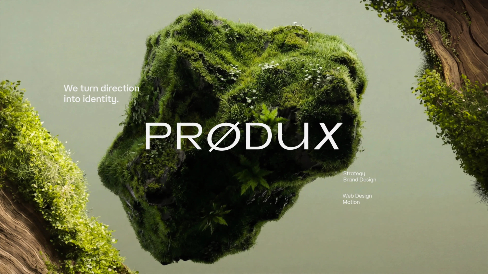
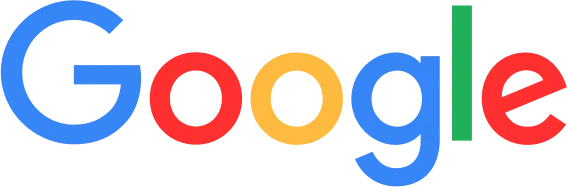

Large identity first
The brand mark is not a small logo. It behaves like a spatial object, setting the page scale before the content appears.
Branding company
A study version of the PRODUX homepage: dark editorial spacing, massive typography, crisp project imagery, and restrained motion.

Effect analysis
The brand mark is not a small logo. It behaves like a spatial object, setting the page scale before the content appears.
Project images carry the credibility. Text stays short, uppercase and functional so visual work remains the main signal.
Reveals, hover scale, cursor labels and parallax are used to show hierarchy instead of decorating every surface.
Selected projects
Trusted by teams building faster

Method
Define positioning, audience and contrast first. The final visual language should feel inevitable, not merely decorative.
A logo is only one part. The reusable system includes type, imagery, UI rhythm, motion and campaign surfaces.
The site uses scale, contrast and controlled motion so the brand lands emotionally before the visitor reads every line.
Make the page feel like a brand system, not a collection of blocks.
Client notes
The work feels deliberate. Each visual decision supports the story instead of competing with it.

Clear thinking, fast iteration and a result with a strong point of view.